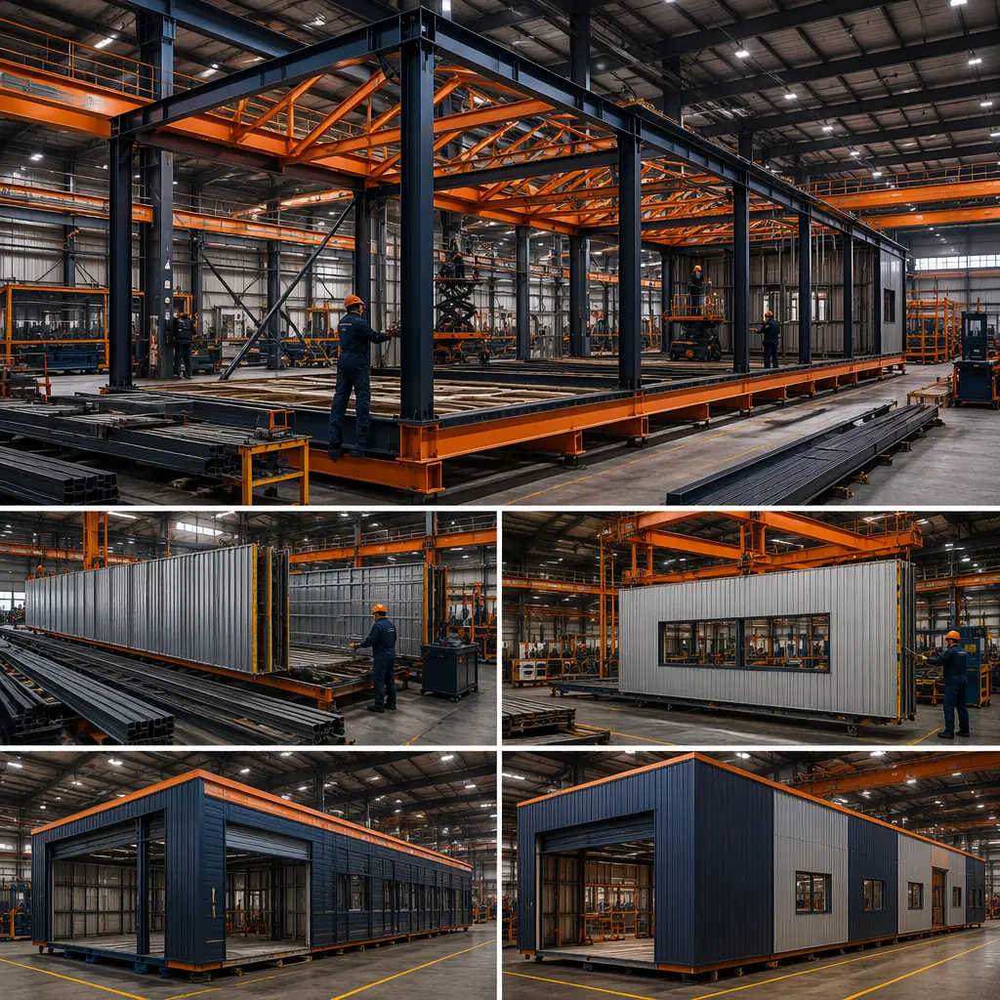
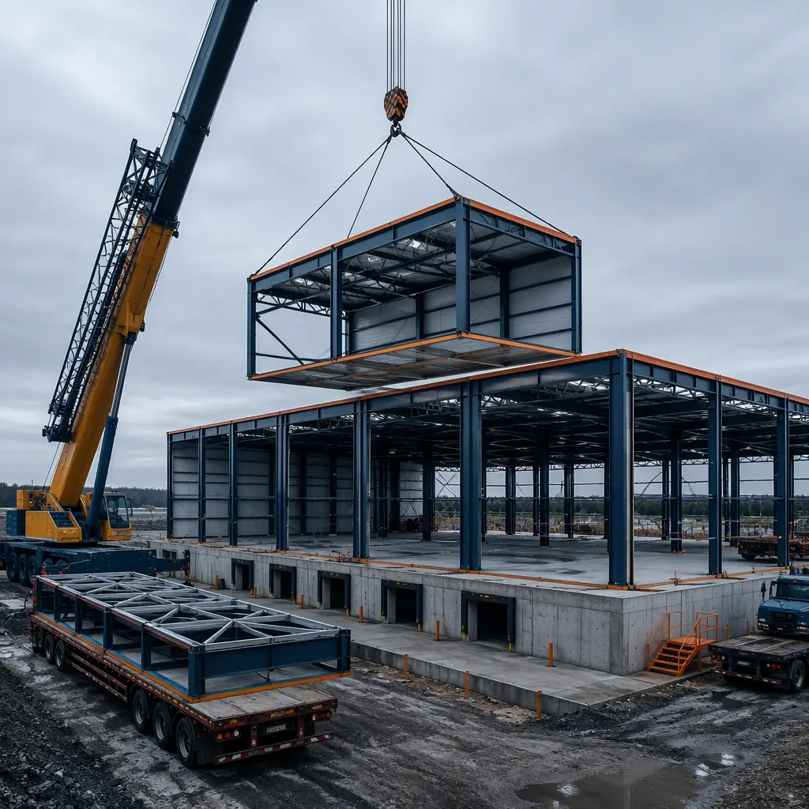
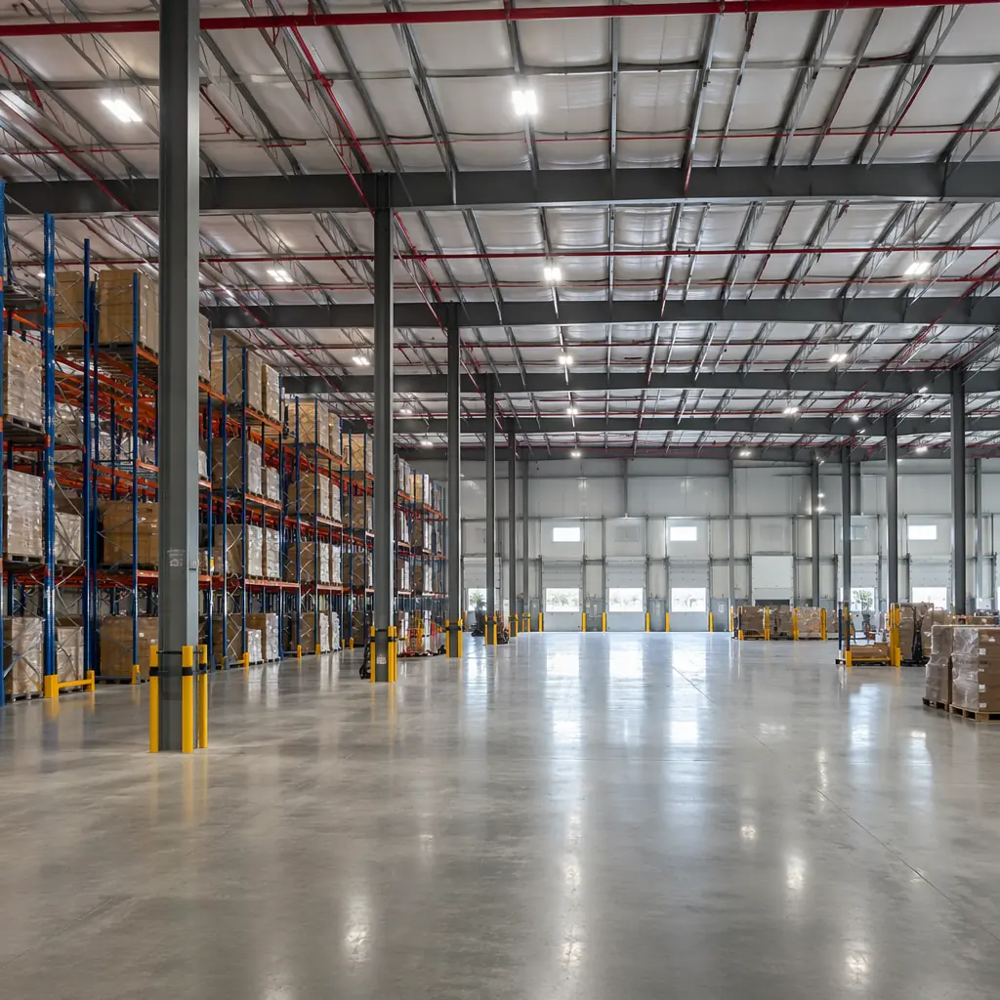
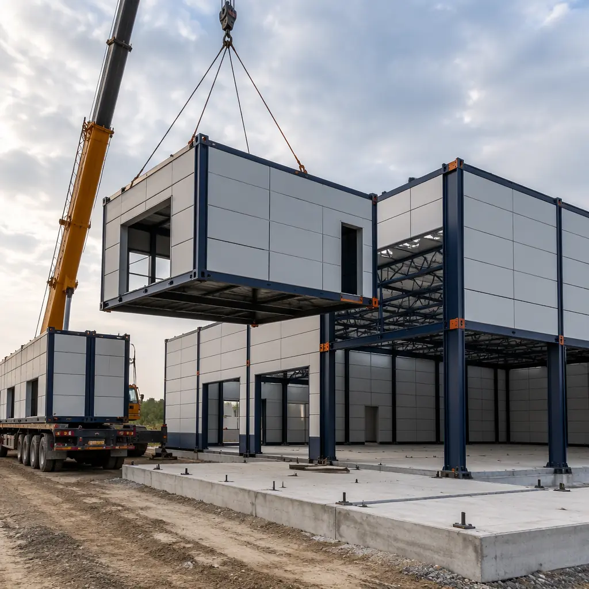

The US industrial construction market added 480 million square feet of new warehouse and distribution space in 2025 — the third consecutive year exceeding 400 million square feet — driven by e-commerce fulfillment, cold chain expansion, and last-mile logistics reshoring. A 250,000 sq ft distribution center built traditionally takes 28-36 weeks from ground-breaking to operational handover. Modular prefabricated industrial construction compresses this to 14-18 weeks — a 50% time savings that converts directly into earlier tenant revenue, faster inventory deployment, and compressed project financing costs. For a logistics operator paying $7.50/sq ft annual lease rates, every week saved on a 100,000 sq ft facility recovers approximately $14,400 in lost rent. Across a 10-building regional rollout, modular construction unlocks roughly $2.3 million in accelerated revenue capture alone.

Why Traditional Industrial Construction Can't Keep Up with Logistics Demand
Industrial construction faces structural bottlenecks that modular manufacturing is uniquely positioned to solve:
- Steel procurement and fabrication lead times dominate the schedule: A traditional 100,000 sq ft warehouse requires 180-220 tons of structural steel, with fabrication lead times of 8-12 weeks from mill order to erection-ready. Modular construction inverts this by integrating the steel frame into the factory-built module itself — the structural frame is fabricated, erected, and enclosed on a parallel track while site foundations are being prepared. The steel supply chain bottleneck shrinks from a sequential dependency to a concurrent process.
- Weather exposure extends steel erection and slab curing: Traditional warehouse construction sequences steel erection → roof deck → insulation → membrane — a 6-8 week process entirely exposed to weather. A single rain event can delay membrane installation by 3-5 days as surfaces dry. In the US Midwest and Northeast, this weather risk adds an average of 3.2 weeks to warehouse construction schedules according to Dodge Data & Analytics. Modular modules arrive on site with the roof, enclosure, and weather barrier already installed — the building is weathertight 72 hours after the last module is set, regardless of conditions during the prior weeks.
- Skilled labor scarcity hits industrial projects hardest: The construction industry faces a shortage of 500,000 workers in the US alone, and industrial projects — with their reliance on steel erectors, welders, and heavy equipment operators — feel this acutely. A traditional warehouse project requires 8-12 specialized trades on site sequentially. Modular industrial construction shifts 70% of labor hours into the factory, where a stable, cross-trained workforce operates year-round under controlled conditions. A MODURA factory line produces the equivalent of one 50,000 sq ft warehouse module set every 3 weeks with a crew 40% smaller than the equivalent site-based team.
These constraints compound at scale. CBRE's industrial construction cost index shows that warehouse construction costs have risen 38% since 2020, with labor and materials contributing equally to the increase. The logistics operators that thrive in this environment aren't the ones with the cheapest land — they're the ones that can deploy capacity faster than their competitors. As we documented in our head-to-head comparison of modular versus traditional construction, factory-controlled production eliminates schedule variability across every building type, and industrial buildings benefit from some of the largest absolute time savings.

How Modular Industrial Construction Works
A modular warehouse isn't a temporary structure or a fabric building — it's a permanent, code-compliant industrial facility manufactured in a climate-controlled factory and assembled on site. MODURA's industrial modules are engineered for the structural demands of warehouse use: 40-foot clear spans, 28-32 foot eave heights, and 250 PSF floor loading for rack-supported storage systems.
Key Components of a Modular Warehouse
| Component | Traditional Site-Built | Modular Factory-Built |
|---|---|---|
| Structural steel frame & roof | 12-16 weeks (procurement + erection) | 8-10 weeks in factory, concurrent with site foundation |
| Building envelope & insulation | 4-6 weeks after steel erection | Pre-installed in factory: IMP panels, R-30 roof, weather barrier |
| Loading docks & levelers | 2-3 weeks, cast-in-place concrete | Dock pits pre-formed in module, levelers factory-mounted |
| MEP rough-in (sprinklers, electrical) | 5-7 weeks sequential trades | ESFR sprinkler mains and bus duct pre-installed, connected at module joints |
| Floor slab | 4-6 weeks (pour + cure + joint cutting) | Site slab poured during module fabrication, modules set on completed slab |
| Operational handover | Week 28-36 | Week 14-18 |
A typical 100,000 sq ft distribution warehouse uses 16-20 modules — each approximately 14 feet wide by 70 feet long (980 sq ft), with steel moment frames providing the 40-foot clear spans that racking systems require. The modules arrive on flatbed trailers, are craned onto the completed slab, and are connected structurally within 5-7 days. ESFR fire suppression mains, 480V bus duct, and data pathways are pre-installed in each module and connected at the module joints — eliminating 3-4 weeks of sequential MEP rough-in on site.

Industrial Formats Where Modular Delivers the Strongest ROI
Last-Mile Distribution Centers (50,000-150,000 sq ft)
This is modular industrial construction's sweet spot — the facility size where speed-to-market generates the highest marginal return. E-commerce operators and 3PL providers need distribution centers within 20 miles of population centers, where land is expensive and construction disruption faces regulatory scrutiny. A 75,000 sq ft last-mile facility built modularly achieves operational readiness in 16 weeks versus 30 weeks traditional — 14 weeks of accelerated revenue capture in a market where Class A industrial space leases at $8-12/sq ft NNN. For a facility generating $75,000/month in lease revenue, the 14-week acceleration recovers $262,500. The reduced on-site construction duration — approximately 6 weeks of site activity versus 22 weeks for traditional — also reduces community opposition and permitting friction in infill locations where construction duration is a primary concern for planning boards.
Cold Storage and Temperature-Controlled Warehouses
Cold storage construction is the most demanding industrial building type: the thermal envelope must maintain a 70°F temperature differential (95°F exterior to -10°F freezer interior) with zero tolerance for thermal bridging that causes ice buildup and energy waste. Traditional cold storage construction sequences insulation installation across 4-6 weeks of on-site work — each insulation panel joint is a potential failure point inspected weeks after installation. Modular cold storage inverts this vulnerability: insulated metal panel (IMP) walls and ceilings are installed in the factory under controlled conditions, with thermal imaging verification performed on every module before it leaves the production line. The result is 30% fewer thermal envelope defects compared to site-built cold storage — documented through commissioning data across MODURA's industrial projects — and energy consumption 8-12% below ASHRAE baseline for equivalent temperature setpoints.
MODURA's cold storage modules incorporate 6-inch IMP walls (R-42), factory-sealed vapor barriers, and pre-installed ammonia or CO2 refrigeration piping rough-in. A 50,000 sq ft cold storage facility requires 12-14 modules and achieves USDA/FDA food safety compliance documentation 3-4 weeks faster than traditional construction because factory quality records provide traceable installation verification for every square foot of the thermal envelope. For cold chain operators deploying multiple regional facilities — a trend accelerating with the growth of online grocery and meal kit delivery — the combination of faster deployment and auditable quality documentation makes modular construction the lowest-risk path to operational readiness.

Light Manufacturing and Assembly Facilities
Manufacturing reshoring — accelerated by tariffs, supply chain disruptions, and the CHIPS Act — is creating demand for light industrial facilities in the 30,000-80,000 sq ft range: electronics assembly, medical device production, automotive component manufacturing, and food processing. These facilities require a hybrid of warehouse functionality (clear spans, heavy floor loading, high bays) and commercial building systems (HVAC, office space, employee amenities). Traditional construction treats this as a custom industrial build with 32-40 week timelines. Modular construction delivers the same hybrid functionality in 18-22 weeks by combining structural warehouse modules with integrated mechanical/office modules — the same approach MODURA uses for modular data center facilities, where power, cooling, and structural requirements are similarly demanding. This hybrid approach to blending warehouse and office space within a single modular program parallels the design philosophy we apply to commercial office buildings, where the line between industrial and commercial functionality is increasingly blurred by modern workplace demands.
Cost Comparison: Modular vs. Traditional Industrial Construction
Industrial construction cost analysis must account for the full project lifecycle — not just the hard-cost bid tab. A modular warehouse's per-square-foot hard cost is typically 3-7% higher than traditional steel construction, but the offsetting savings across financing, site overhead, and early revenue capture produce net cost parity or better in most applications:
| Cost Category | Traditional | Modular | Delta |
|---|---|---|---|
| Hard construction ($/sq ft) | $85-110 | $90-115 | +3-7% |
| Construction loan interest (shorter duration) | 18-22 weeks of draw period | 10-12 weeks of draw period | −35-45% interest cost |
| General conditions / site overhead | 28-36 weeks | 14-18 weeks | −50% site overhead |
| Lease-up / revenue acceleration | Revenue starts week 28-36 | Revenue starts week 14-18 | +12-18 weeks revenue |
| Change orders (% of contract) | 6-10% | 2-4% | −4-6 pts |
| Warranty callbacks (first 12 months) | 12-18 items typical | 3-5 items typical | −65-75% |
For cold storage facilities — where the thermal envelope quality directly determines 40-year operating costs — modular construction's factory-verified insulation integrity generates additional savings. A 10% improvement in thermal envelope performance on a 50,000 sq ft freezer facility reduces annual energy consumption by approximately 180,000 kWh — worth $18,000-22,000 per year at average US industrial electricity rates, compounding every year the facility operates. These lifecycle economics explain why the ROI case for modular construction strengthens when analyzed over a 10-year horizon rather than bid-day hard costs alone, consistent with the patterns documented in our comprehensive ROI analysis for developers.

Sustainability Advantage for Industrial Portfolios
Industrial real estate portfolios face growing ESG compliance pressure — from institutional investors requiring GRESB reporting to tenants demanding carbon-neutral supply chain facilities. Modular industrial construction provides a documented sustainability advantage across three dimensions:
- Embodied carbon reduction of 25-35%: Factory production reduces material waste from the 15-20% typical of site-built industrial construction to under 5%. Steel offcuts are recycled within the factory's closed-loop system. Concrete for module joints is batched to precise quantities — no over-ordering and disposal of 2-3 yards per truck that characterizes site concrete work. For a 100,000 sq ft warehouse, this translates to approximately 120-160 fewer tons of construction waste sent to landfill.
- Operational carbon from factory efficiency: On-site construction generates 40-60 worker vehicle trips per day over 6-8 months of a traditional warehouse build — approximately 7,000-10,000 vehicle trips. Modular construction's factory workforce commutes to a single location daily, and modules are delivered in 16-20 concentrated flatbed trips, reducing construction-phase transportation emissions by approximately 60%.
- Design for disassembly and material recovery: Modular industrial buildings are inherently demountable — the bolted module connections that enable rapid assembly also enable future disassembly. When a warehouse reaches end-of-life or a logistics operator vacates, the modules can be unbolted, transported, and reassembled at a new location with approximately 85% material recovery. Traditional steel warehouse demolition recovers 70-75% of steel for recycling but loses the entire building enclosure, MEP systems, and foundation. As we explored in our analysis of sustainable modular construction, design for disassembly transforms buildings from single-use assets into reusable material banks — a concept that's gaining traction with ESG-focused REITs and institutional industrial investors.
Is Modular Right for Your Industrial Project?
Modular industrial construction delivers the strongest advantage when your project exhibits these characteristics:
- Facility size 50,000-200,000 sq ft: The sweet spot where module count (10-30) enables efficient factory production and the schedule compression versus traditional construction is most dramatic
- Multi-facility program (3+ buildings): Where factory learning curve efficiencies compound across subsequent buildings — the 5th modular warehouse off the production line typically requires 15% fewer factory labor hours than the first
- Cold storage or temperature-controlled space: Where factory-verified thermal envelope quality directly reduces 40-year operating costs and commissioning timelines
- Time-sensitive deployment: Seasonal demand peaks (holiday fulfillment), lease commencement deadlines, or competitor preemption that makes every week of acceleration valuable
- Urban infill or constrained sites: Where 6 months of traditional construction activity creates permitting, traffic, and community relations challenges that 6 weeks of modular site assembly avoids
For one-off 400,000+ sq ft bulk distribution centers where the building is essentially a big box with minimal MEP complexity, traditional tilt-up or pre-engineered metal building construction remains cost-competitive at the hard-bid level. But for the 60-70% of US industrial construction that falls in the 50,000-200,000 sq ft range — last-mile distribution, cold storage, light manufacturing, and multi-tenant flex industrial — modular construction's combination of speed, quality, and predictable cost makes it increasingly the default choice for sophisticated developers and logistics operators.
MODURA brings 500+ completed modular projects across 18 countries and 4 ISO 9001/14001 certified factories to every industrial engagement. Whether you're planning a single distribution center or a 10-building logistics portfolio, contact our industrial team for a free feasibility assessment including site analysis, timeline comparison, and a modular build program tailored to your facility specifications and deployment schedule.